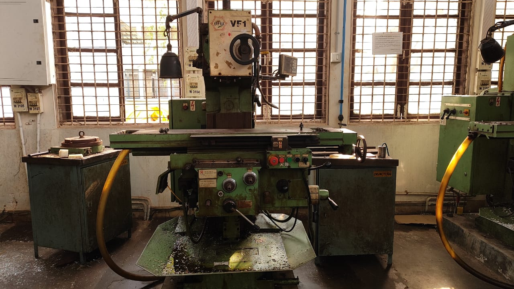
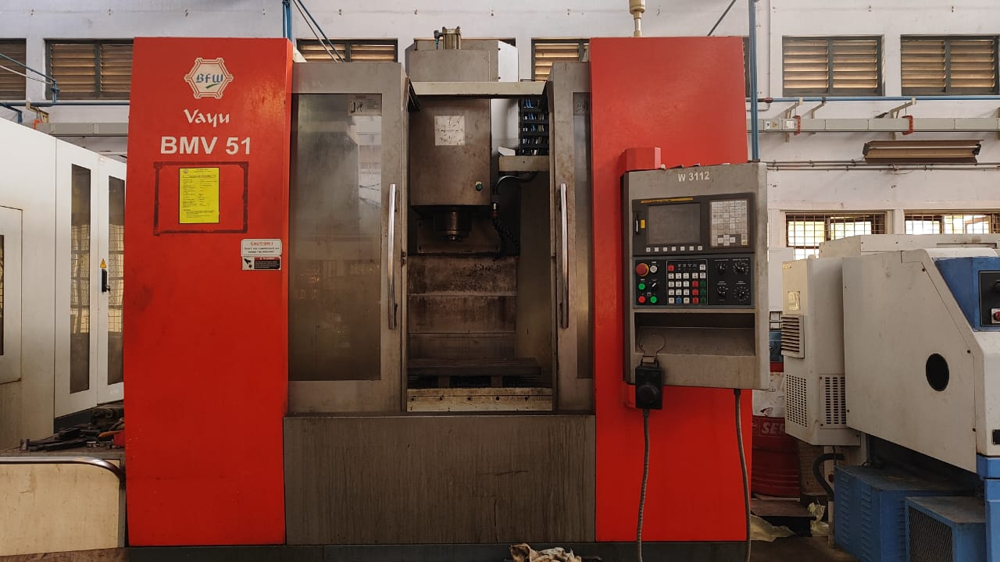

Once upon a time in a factory far, far away, making a metal part meant a person would manually cut, drill, or shape it using tools — slowly, carefully, and with a whole lot of elbow grease. But then came CNC machining — the superhero of modern manufacturing.
CNC stands for Computer Numerical Control but let's not get scared by the name. In short, it's like giving instructions to a robot to do the cutting for you. Imagine drawing a shape on your computer and then sending that to a machine that magically makes it out of metal. That's CNC.
Instead of turning handles and measuring by hand, engineers now sit at computers, tell the machine exactly what to do, and boom — it listens. Perfect cuts, every time. It's fast, accurate, and doesn't get tired like humans do. Whether it's a car part, a phone case, or even a tiny gear inside your watch — chances are, CNC made it.
Now, how do these machines know what to do? That's where Mastercam comes in.
Think of Mastercam as Google Translate — but for machines. Engineers draw what they want to make on the computer, and Mastercam turns that into a special code (called G-code) that CNC machines can read.
It's kind of like:
> You: "Hey, machine! I want this shape cut out of this block of metal."
> Mastercam: translates that into thousands of tiny instructions the machine follows exactly.
> Machine: Whirr... Buzz... Ta-da!
Why It Matters
• It's faster than manual work
• It's more precise — like, space shuttle precise
• It lets people design wild shapes that are too tricky to make by hand
• It's safer. No more worrying about slipping with a saw
CNC machining and tools like Mastercam are changing how things are made — from bikes to jet engines. It's not just a fancy machine — it's the future of manufacturing, one spin and one code line at a time.